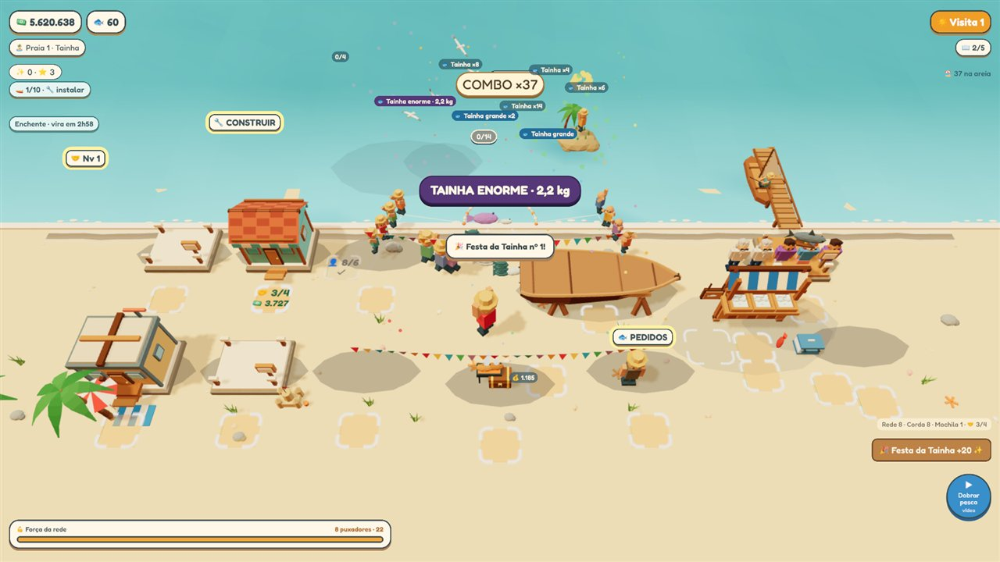
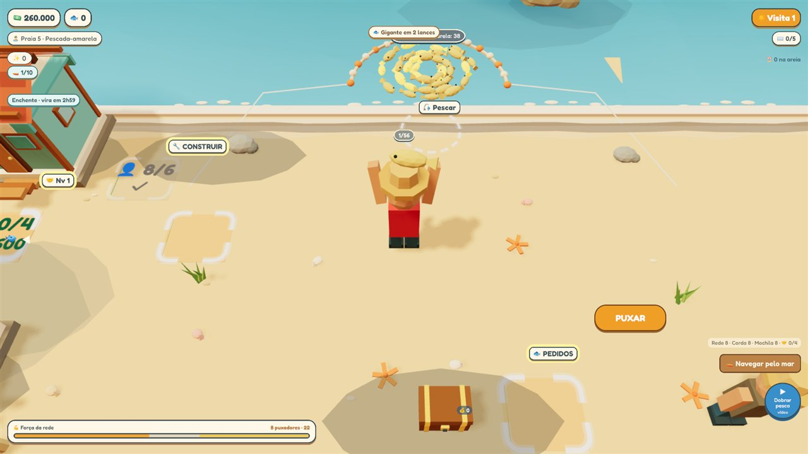
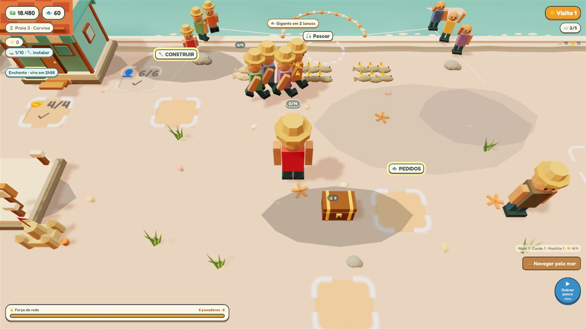
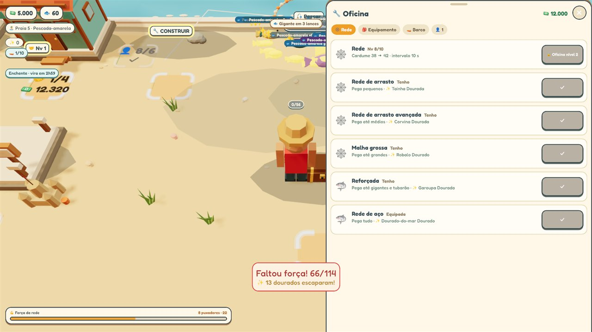
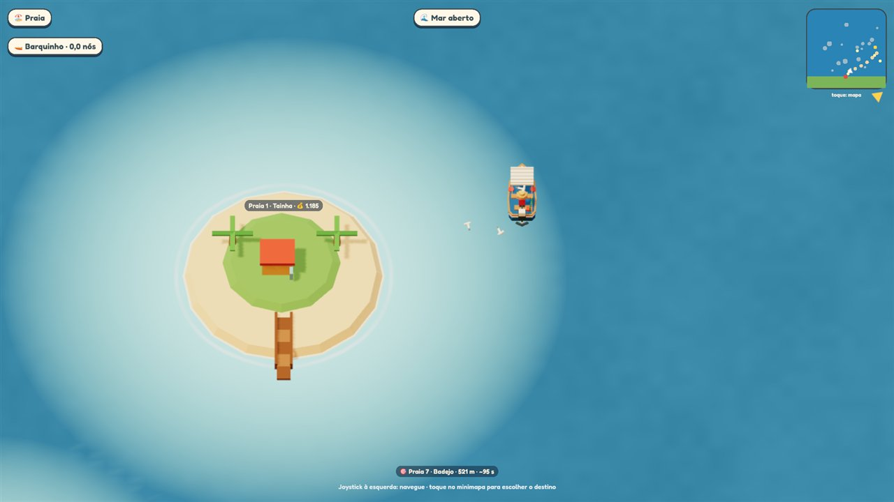
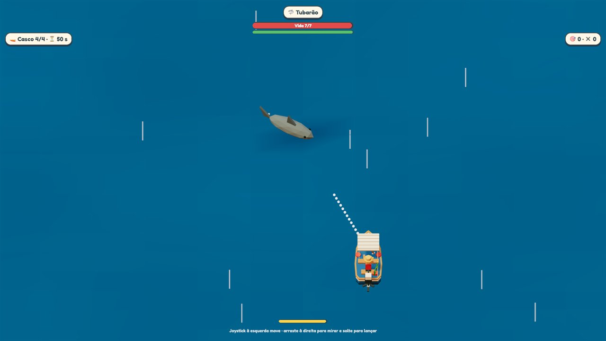

Da tarrafa ao Iate
Puxe a rede, venda o peixe e transforme uma praia vazia na maior base de pesca do litoral.
Baixar no Google Play Grátis, para Android.
Como é o jogo
Fishing Shores - Idle Tycoon é um jogo de pesca tranquilo: rende mesmo com o celular no bolso e rende mais quando você puxa junto.
Puxe a rede
Cada lance traz um cardume. Chame puxadores, melhore a rede e fique de olho no peixe dourado e no gigante.
Venda na banca
Os fregueses fazem fila na peixaria e o dinheiro vai empilhando ao lado do balcão, esperando você recolher.
Construa a base
Oficina, armazém, estaleiro, restaurante e mais: cada prédio abre um jeito novo de ganhar.
Navegue pelo mar
Pegue o barco, descubra dez praias e ilhas, cada uma com o seu peixe e a sua maré.
Enfrente os grandes
Tubarão, marlim e outros chefes do mar. Vença a disputa e solte o bicho de volta na água.
Monte o Iate
Cada praia guarda uma peça. Junte as dez, instale no casco e lance o seu Iate ao mar.
Telas do jogo
Imagens tiradas do próprio jogo.





Contato e suporte
Fishing Shores - Idle Tycoon é feito pela VaptStudio. Dúvidas, problemas ou sugestões: escreva para vapstudio@gmail.com.
Leia também a nossa Política de Privacidade.